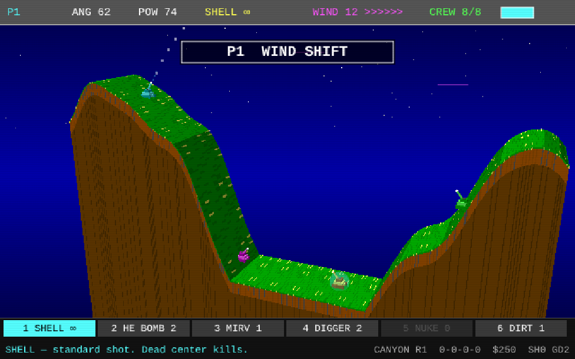
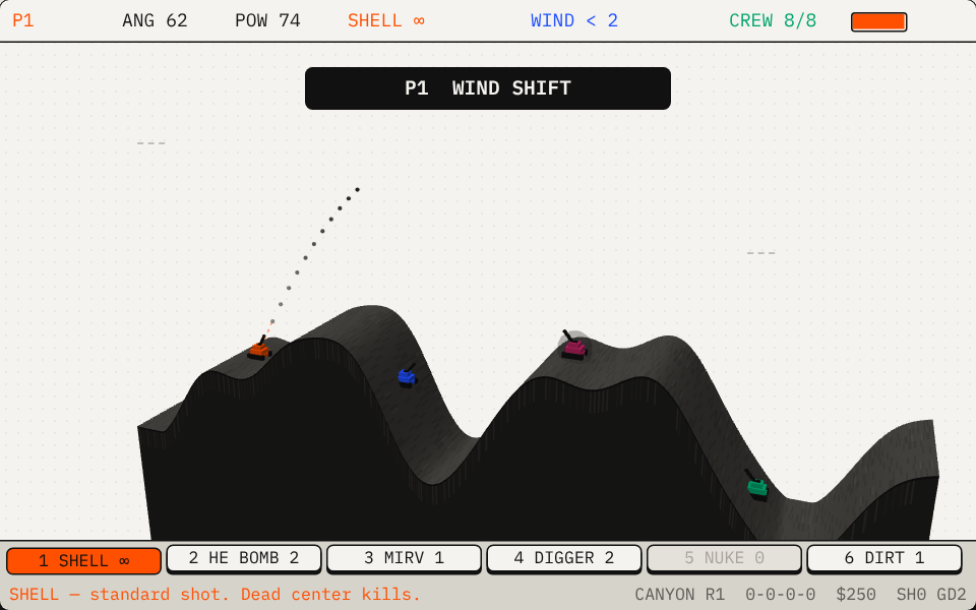
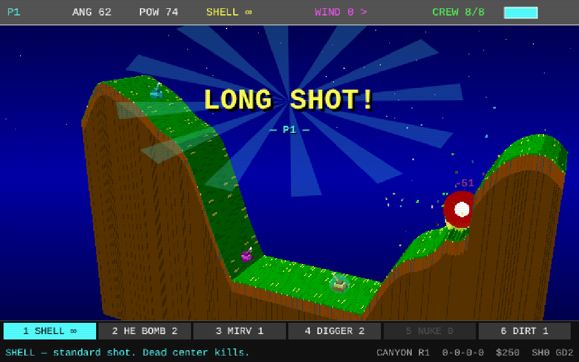
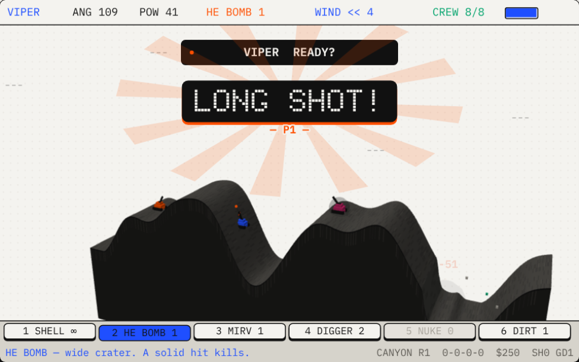

One Hill, a Tank Wars tribute
Up to four tanks. One hill. The wind changes every turn.
One Hill is turn-based artillery, a tribute to the 1990 DOS classic Tank Wars. A tribute to the 1990 DOS classic Tank Wars, rebuilt for 2026. Set an angle, set the power, lob a shell over the mountain, and find out whether the wind turned on you.
Free · plays in the browser · nothing to install · got an invite code?
ATTRACT MODE
It plays itself until you sit down.
That's the actual game, running live on this page. VIPER, HAMMER and BRUTUS are set to HARD and are settling it among themselves.
Every hill is a new map: canyon, mesa, or a water gap that swallows shells. Craters stay. Dig out the ground under a tank and down it goes.
Click the screen to take a turn yourself.
VIEW
Tip the hill back. Now it's 3D.
Flip 2D · 3D in the menu bar, or press V in the game, and the flat hill tips back into a diorama: a slab of ground with a cut face, blocky tanks, and a camera that leans toward whoever is aiming and follows the shell. Q and E turn the camera yourself.
It's the same game underneath. Shells still fly straight down the middle of the slab, so the wind, the craters, the CPU and online rooms all work exactly as before, and everyone in a room picks their own view. It works in 1990 and in 2026.




Land one worth bragging about and the game stops to say so: LONG SHOT from across the map, FROM ORBIT off the top of the screen, WIND RIDER through a gale, DEAD CENTER, LUCKY HIT, a DOUBLE KILL. Take yourself out and you get OWN GOAL instead.
3D needs a browser with WebGL2. Without it the switch is hidden and the game stays flat.
ONLINE
Send a code. Start a war.
-
HOST. Pick ONLINE, then HOST. You get a five-letter code like
K7Q4M. It skips I, O, 0 and 1, so it survives being read over the phone. - INVITE. Send the invite link (one tap on a phone) or just the code.
- FIRE. Each turn has a 45-second shot clock. When it hits zero, your current aim goes.
- TALK. Every room has a chat box under the screen. Press /, type, hit Enter.
If someone drops out, a bot takes over their tank and the hill plays on. No accounts and no sign-up: the browsers connect to each other directly.
Nobody to send a code to? Join a public room instead.
PUBLIC ROOMS
Nobody to play with? Walk into a room.
You don't need a friend with a code. Any host can set their room to PUBLIC, and it shows up here, and on the game's join screen, for anyone to walk into. Up to four players a room, each on their own screen, and no account for anybody.
OPEN ROOMS Scroll here and the list goes looking.
No player rooms are open right now. Open a bot room below and you're on this list for the next visitor.
BOT ROOMS Always open
- WARM-UP You + 1 CPU tank on easy PLAY
- SKIRMISH You + 2 CPU tanks on normal PLAY
- BRAWL You + 3 CPU tanks on hard PLAY
A bot room is a public room of your own with CPU tanks already in the seats. Start against the bots straight away, or wait a moment: while you wait you're on the list above, and any human who joins takes a bot's seat.
HOST A PUBLIC ROOM BROWSE IN THE GAME
- HOST. Open a room and switch ROOM LIST to PUBLIC. It starts PRIVATE, so games with friends stay unlisted.
- WAIT. Your room is listed while it has a free seat and hasn't started. Fill the gaps with CPU tanks if you like.
- START. Press START when you're happy with the crowd. The room leaves the list and the hill is yours to fight over.
There is no game server. The list is passed between the browsers that have it open, so it can go blank for a few seconds when one of them leaves.
SUPPLY
Kills pay. Spend it on bigger holes.
Win a hill: $700. Each kill: $400. Survive without winning: $150. Everyone starts with $250, ammo you don't fire carries over, and crates drop free rounds mid-battle.
- 1SHELLFREEUnlimited. Dead center kills.
- 2HE BOMB ×2$400Fat crater. A solid hit kills.
- 3MIRV$500Splits into three on the way down.
- 4DIGGERCRATESBurrows into the hill, then blows.
- 5NUKE$1200Huge blast. Do not miss.
- 6DIRT BOMB$300Piles a mound instead of digging one.
- TGUIDANCE$200One full dotted arc to the landing.
- SHIELD$650Blocks the next hit. Even a fall.
KEYBOARD
A few keys and a steady hand.
Go on, press them. This page is listening.
- AD swing the barrel
- WS more or less power
- SHIFT fine adjustment
- SPACE fire
- 1to6 pick a weapon
- T full arc, spends a guidance
- M mute
- ESC back to the title
Rather use a mouse? Drag around your tank to aim, drag up or down for power, click to fire. Touch screens work the same way. Arrow keys do what A, D, W and S do.
HELP.TXTFAQ
Questions before you fire.
What is One Hill?
One Hill is a free turn-based tank artillery game that runs in your web browser. Set your barrel's angle and power, allow for the wind, and lob shells over the hill at up to three other tanks. It is a tribute to Tank Wars, the 1990 DOS shareware game by Kenny Morse.
Is One Hill free to play?
Yes. The whole game is free, with no account, no download and nothing to pay for. Open the page and play.
How do I play with friends online?
Pick ONLINE, then HOST, and you get a five-letter invite code. Send friends the code or the invite link, and up to four players share one hill, each on their own screen. Empty seats can be filled with CPU tanks, and nobody has to sign up.
Can I play online with people I don't know?
Yes. When you host an online room you can set it to PUBLIC, and it appears in the public room list on the front page and on the game's join screen. Anyone can pick it from the list and join, up to four players, with no code to pass around. Rooms are PRIVATE unless the host chooses otherwise.
Does One Hill have a 3D mode?
Yes. The 2D / 3D switch, or the V key in the game, redraws the same battlefield as a 3D diorama with a camera that follows the action. The rules, the wind and online play are identical in both views, and it works in the 1990 and 2026 looks. It needs a browser with WebGL2.
Can I play on a phone or tablet?
Yes. One Hill works on touch screens: drag around your tank to aim, drag up or down for power, and tap to fire. On a computer you can use the keyboard or the mouse.
What is the Daily Hill?
The Daily Hill is one new hill a day that is the same for everyone: the same map, the same wind on every turn and the same bonus kit, against the LOBBER CPU. Take the hill in as few shots as you can. Your first try counts, and you can share your row of shots afterwards. A new hill arrives at midnight, your time.
Can I play alone, or with friends on one keyboard?
Yes. Play against one to three CPU tanks on EASY, NORMAL or HARD, or pass one keyboard between two to four players in hotseat mode.
Is this the original Tank Wars?
No. One Hill is an independent fan tribute, written from scratch with original graphics and sound, and it is not affiliated with the original game. If you grew up on Tank Wars, Scorched Earth or other artillery games, it will feel familiar.